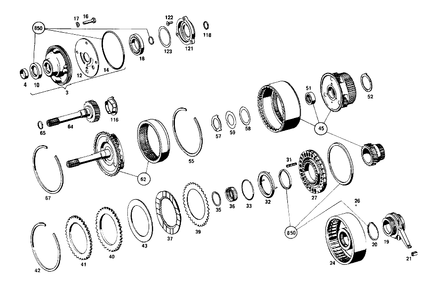

| № | Артикул | Название | Кол. | Примечание | Ограничение |
|---|---|---|---|---|---|
| 3 | A 115 270 08 90 | - Корпус | 1 | с PRIMARY PUMP | |
| 4 | A 112 277 43 50 | - втулка | 1 | ||
| 10 | A 008 997 91 46 | - Уплотнительное кольцо | 1 | ||
| 12 | A 115 277 03 14 | - ПЛАСТИНА ПРОМЕЖУТОЧНАЯ | 1 | ||
| 14 | A 004 997 05 48 | - Уплотнительное кольцо | 1 | ||
| 16 | N 000931 008046 | - Винт | - | ||
| 16 | N 304017 008018 | - Винт с 6-гранной головкой | 4 | M8X35 | |
| 17 | N 000137 008204 | - Пружинная шайба | 4 | ||
| 18 | N 000625 016008 | - Шарикоподшипник | 1 | [402] БОЛЬШЕ НЕ ПОСТАВЛЯЕТСЯ | |
| 19 | A 115 270 21 50 | - втулка | 1 | [005] FROM TRANSMISSION 115.010 012078 115.110 009786 | |
| 20 | A 115 272 06 55 | - УПЛОТНИТ. КОЛЬЦО | - | ||
| 20 | A 316 272 04 55 | - Уплотнительное кольцо | 4 | [402] БОЛЬШЕ НЕ ПОСТАВЛЯЕТСЯ | |
| 21 | A 115 272 07 92 | - Резиновый наконечник | 1 | ||
| 24 | A 115 270 41 20 | - ФЛАНЕЦ | 1 | [402] БОЛЬШЕ НЕ ПОСТАВЛЯЕТСЯ [007] FROM TRANSMISSION 115.010 017665-023454, ALSO INSTALLED ON: 015709-017194 115.010 014864-018835, ALSO INSTALLED ON: 013132-014433 | |
| 26 | A 094 990 45 07 | - Шар | 2 | ||
| 27 | A 115 272 02 31 | - ПОРШЕНЬ | 1 | [402] БОЛЬШЕ НЕ ПОСТАВЛЯЕТСЯ | |
| 31 | A 115 993 52 01 | - пружина | 28 | ||
| 32 | A 115 270 04 41 | - Тарелка пружины | 1 | ||
| 33 | A 115 994 08 35 | - Пруж. стопорное кольцо | 1 | ||
| 35 | A 000 994 14 40 | - Пруж. стопорное кольцо | 1 | ||
| 36 | A 006 981 42 10 | - ПОДШИПНИК ИГОЛЬЧАТЫЙ | 1 | ||
| 37 | A 112 272 02 25 | - Диск | 3 | ||
| 39 | A 109 272 15 26 | - Диск | 1 | ПО НЕОБХОДИМОСТИ 2.00 MM | |
| 40 | A 109 272 23 26 | - Диск | 2 | ПО НЕОБХОДИМОСТИ 5.00 MM [010] FROM TRANSMISSION 115.010 017665, ALSO INSTALLED ON: 015709-017194 115.110 014864, ALSO INSTALLED ON: 013132-014433 | |
| 41 | A 109 272 19 26 | - Диск | 1 | ПО НЕОБХОДИМОСТИ 5.00 MM [010] FROM TRANSMISSION 115.010 017665, ALSO INSTALLED ON: 015709-017194 115.110 014864, ALSO INSTALLED ON: 013132-014433 | |
| 42 | A 115 272 12 73 | - Кольцо | 1 | ||
| 43 | A 112 272 14 62 | - Диск | 1 | ПО НЕОБХОДИМОСТИ 0.60MM [011] UP TO TRANSMISSION 115.010 024505 115.110 019586 | |
| 45 | A 115 270 60 43 | - ВОДИЛО ПЛАНЕТ. ПЕРЕДАЧИ | 1 | [013] FROM TRANSMISSION 115.010 036485 115.110 084331 | |
| 51 | A 004 981 21 10 | - ПОДШИПНИК ИГОЛЬЧАТЫЙ | - | ||
| 51 | A 000 981 14 11 | - Игольчатый подшипник | 1 | ||
| 52 | A 115 272 33 62 | - Упорная шайба | 1 | ||
| 55 | A 115 272 02 73 | - Кольцо | 2 | ||
| 57 | A 115 272 34 62 | - Упорная шайба | 1 | ||
| 58 | A 115 271 17 52 | - Компенсационная шайба | 1 | ПО НЕОБХОДИМОСТИ 0.1 MM | |
| 59 | A 115 271 21 52 | - Компенсационная шайба | 1 | ПО НЕОБХОДИМОСТИ 0.1 MM | |
| 62 | A 115 270 56 43 | - ВОДИЛО ПЛАНЕТ. ПЕРЕДАЧИ | 1 | ||
| 64 | A 115 270 59 25 | - ПРИВОДНОЙ ВАЛ | 1 | ||
| 65 | A 115 272 11 55 | - Уплотнительное кольцо | 1 | [016] FROM TRANSMISSION 115.010 043914 115.110 031416 | |
| 67 | A 115 272 04 73 | - Кольцо | 1 | ||
| 68 | A 115 272 29 45 | - ФЛАНЕЦ | 1 | ||
| 71 | A 115 272 09 31 | - ПОРШЕНЬ | 1 | [402] БОЛЬШЕ НЕ ПОСТАВЛЯЕТСЯ | |
| 78 | A 115 993 53 01 | - ПРУЖИНА | 28 | [402] БОЛЬШЕ НЕ ПОСТАВЛЯЕТСЯ | |
| 79 | A 115 270 04 41 | - Тарелка пружины | 1 | ||
| 82 | A 115 994 08 35 | - Пруж. стопорное кольцо | 1 | ||
| 83 | A 115 272 50 24 | - ОБОЙМА ФРИКЦ. ДИСКОВ | 1 | [402] БОЛЬШЕ НЕ ПОСТАВЛЯЕТСЯ [077] FROM TRANSMISSION 115.010 020255 115.110 017086 | |
| 84 | A 115 272 04 73 | - Кольцо | 1 | ||
| 85 | A 112 272 02 25 | - Диск | 2 | ||
| 86 | A 109 272 18 26 | - Диск | 1 | ПО НЕОБХОДИМОСТИ 5.00MM | |
| 88 | A 115 272 13 73 | - Кольцо | 1 | ||
| 90 | A 002 981 31 10 | - Игольчатый подшипник | 1 | [402] БОЛЬШЕ НЕ ПОСТАВЛЯЕТСЯ | |
| 91 | A 115 270 56 25 | - ПРИВОДНОЙ ВАЛ | 1 | [023] FROM TRANSMISSION 115.010 043590 115.110 031316 | |
| 92 | A 002 981 32 10 | - Сепаратор иг. подшипника | 1 | ||
| 93 | A 115 272 34 62 | - Упорная шайба | 1 | ||
| 94 | A 115 272 02 73 | - Кольцо | 1 | ||
| 95 | A 112 994 07 35 | - Пруж. стопорное кольцо | 1 | [023] FROM TRANSMISSION 115.010 043590 115.110 031316 | |
| 96 | A 002 994 26 41 | - Стопорное кольцо | 1 | [019] FROM TRANSMISSION 115.010 029735 115.110 022986 | |
| 99 | A 002 981 12 10 | - ПОДШИПНИК ИГОЛЬЧАТЫЙ | 1 | [020] UP TO TRANSMISSION 115.010 011777 115.110 009363 | |
| 100 | A 002 981 30 10 | - Игольчатый подшипник | 1 | ||
| 102 | A 115 270 55 25 | - ПРИВОДНОЙ ВАЛ | 1 | [023] FROM TRANSMISSION 115.010 043590 115.110 031316 | |
| 104 | A 115 270 26 43 | - ВОДИЛО ПЛАНЕТ. ПЕРЕДАЧИ | 1 | ||
| 112 | A 007 981 39 10 | - Игольчатый подшипник | 1 | ||
| 113 | A 004 981 40 10 | - Сепаратор иг. подшипника | 1 | ||
| 114 | A 115 272 37 62 | - Упорная шайба | 1 | ||
| 115 | A 001 981 18 25 | - Рад. шарикоподшипник | 1 | ||
| 116 | A 115 272 49 62 | - Диск | 1 | [024] 010 005986 BIS FGST. 039284 115.010 015645, ALSO INSTALLED ON: 012961-013427 115.110 013132, ALSO INSTALLED ON: 010364-010763 | |
| 118 | A 307 272 05 55 | - Уплотнительное кольцо | 1 | ||
| 121 | A 115 272 24 45 | - Опорный фланец | 1 | ||
| 122 | N 007987 006108 | - БОЛТ | 3 | ||
| 123 | A 115 271 13 52 | - Компенсационная шайба | 1 | ||
| 124 | A 000 304 07 90 | - ПЕРЕКЛ.МАГНИТ | 1 | ||
| 125 | A 000 304 06 90 | - ПЕРЕКЛ.МАГНИТ | - | ||
| 125 | A 000 304 05 90 | - ПЕРЕКЛ.МАГНИТ | 1 | ||
| 126 | A 010 997 77 45 | - Уплотнительное кольцо | 1 | ||
| 127 | A 007 997 96 45 | - Уплотнительное кольцо | 1 | ||
| 128 | A 007 997 80 45 | - Уплотнительное кольцо | 1 | ||
| 129 | N 007603 014104 | - Уплотнительное кольцо | 1 | ||
| 135 | A 115 270 77 11 | - КОРПУС КП | 1 | ||
| 136 | A 115 277 15 40 | - Держатель | 1 | [029] FROM TRANSMISSION: 115.010 024695 115.110 019886 | |
| 137 | A 115 997 06 30 | - Резьбовая пробка | 1 | ||
| 138 | N 007603 008105 | - Уплотнительное кольцо | 1 | ||
| 139 | A 110 997 03 30 | - Резьбовая пробка | 1 | ||
| 140 | N 007603 012104 | - Уплотнительное кольцо | 1 | ||
| 141 | A 006 997 61 46 | - Уплотнительное кольцо | 2 | ||
| 142 | A 115 270 08 68 | - НАПРАВЛ. ТРУБКА | 1 | [030] AGAINST SQUEALING OF TRANSMISSION | |
| 145 | A 115 277 32 05 | - КОРПУС | 1 | [402] БОЛЬШЕ НЕ ПОСТАВЛЯЕТСЯ [031] 017 033477, AUSSERDEM EINGEBAUT IN: 115.010 105672, FROM TRANSMISSION 000001 | |
| 146 | A 115 993 20 10 | - пружина | 2 | [402] БОЛЬШЕ НЕ ПОСТАВЛЯЕТСЯ | |
| 147 | N 000931 006085 | - Винт | 3 | ||
| 148 | N 000137 006204 | - Пружинная шайба | 3 | ||
| 150 | A 000 545 33 06 | - Переключатель | 1 | ||
| 151 | A 115 997 07 40 | - Уплотнительное кольцо | 1 | ||
| 152 | N 000137 005203 | - Пружинная шайба | 3 | ||
| 153 | N 000084 005174 | - Винт | 3 | ||
| 155 | A 115 278 16 20 | - РЫЧАГ | 1 | [033] FROM CHASSIS 115.010 030974 115.110 073871 | |
| 156 | A 115 278 09 10 | - ВАЛ РЕГУЛЯТОРА | 1 | [402] БОЛЬШЕ НЕ ПОСТАВЛЯЕТСЯ [033] FROM CHASSIS 115.010 030974 115.110 073871 | |
| 157 | A 115 278 09 50 | - втулка | 1 | [033] FROM CHASSIS 115.010 030974 115.110 073871 | |
| 158 | A 115 278 01 53 | - РАСПОРН. ТРУБКА | 1 | [402] БОЛЬШЕ НЕ ПОСТАВЛЯЕТСЯ [033] FROM CHASSIS 115.010 030974 115.110 073871 | |
| 160 | A 004 997 37 45 | - Уплотнительное кольцо | 1 | [033] FROM CHASSIS 115.010 030974 115.110 073871 | |
| 162 | N 000084 004139 | - Винт | 1 | [033] FROM CHASSIS 115.010 030974 115.110 073871 | |
| 163 | N 009021 004202 | - Шайба | - | ||
| 163 | A 094 990 63 08 | - Шайба | 1 | [033] FROM CHASSIS 115.010 030974 115.110 073871 | |
| 164 | N 000137 004202 | - Пружинная шайба | 1 | [033] FROM CHASSIS 115.010 030974 115.110 073871 | |
| 166 | A 115 270 01 57 | - Пластина фиксации сел.АКП | 1 | ||
| 167 | N 006912 006006 | - Винт | 1 | ||
| 168 | N 000137 006204 | - Пружинная шайба | 1 | ||
| 170 | A 109 270 10 89 | - Нажимной элемент | 1 | [028] FROM TRANSMISSION: 115.010 031535 115.110 024366 | |
| 171 | A 109 270 11 89 | - Нажимной элемент | 1 | [028] FROM TRANSMISSION: 115.010 031535 115.110 024366 | |
| 172 | A 010 997 08 45 | - УПЛОТНИТ. КОЛЬЦО | - | ||
| 172 | A 016 997 34 48 | - Кольцевая прокладка | 2 | [028] FROM TRANSMISSION: 115.010 031535 115.110 024366 | |
| 173 | A 115 993 00 22 | - пружина | 1 | [402] БОЛЬШЕ НЕ ПОСТАВЛЯЕТСЯ | |
| 174 | A 109 277 01 75 | - Нажимной штифт | 2 | ПО НЕОБХОДИМОСТИ 22mm | |
| 177 | A 115 277 02 74 | - Палец | 1 | ||
| 178 | A 115 277 04 24 | - РЫЧАГ | 1 | ||
| 179 | A 115 277 53 75 | - Нажимной штифт | 2 | ||
| 180 | A 115 993 02 25 | - пружина | 1 | ||
| 181 | A 115 277 17 71 | - болт | 1 | ||
| 182 | A 115 990 04 51 | - гайка | 1 | ||
| 185 | A 115 270 61 32 | - Поршень | 1 | ||
| 186 | A 115 272 08 92 | - Уплотнительное кольцо | 1 | ||
| 189 | A 115 994 17 35 | - Пруж. стопорное кольцо | 1 | ||
| 192 | A 115 993 18 05 | - пружина | 1 | [402] БОЛЬШЕ НЕ ПОСТАВЛЯЕТСЯ | |
| 193 | A 115 277 16 03 | - КРЫШКА | 1 | [402] БОЛЬШЕ НЕ ПОСТАВЛЯЕТСЯ | |
| 194 | A 008 997 35 45 | - Уплотнительное кольцо | 1 | ||
| 195 | A 115 994 04 35 | - Пруж. стопорное кольцо | 1 | ||
| 198 | A 115 270 06 59 | - РЫЧАГ | 1 | ||
| 199 | A 115 990 17 40 | - Диск | 1 | ||
| 200 | N 006799 009002 | - Стопорная шайба | 1 | ||
| 202 | A 115 270 08 59 | - Рычаг | 1 | ||
| 204 | N 000933 006123 | - Винт | 1 | ||
| 205 | N 000137 006204 | - Пружинная шайба | 2 | ||
| 206 | N 000934 006013 | - Гайка | - | ||
| 206 | N 304032 006008 | - Шестигранная гайка | 1 | ||
| 208 | A 116 270 03 62 | - ЛЕНТА ТОРМОЗНАЯ | - | ||
| 208 | A 116 270 17 62 | - Тормозная лента | 1 | ||
| 210 | A 115 993 55 03 | - пружина | 1 | [402] БОЛЬШЕ НЕ ПОСТАВЛЯЕТСЯ [027] UP TO TRANSMISSION: 115.010 031534 115.110 024365 | |
| 211 | A 115 993 54 03 | - пружина | 1 | [402] БОЛЬШЕ НЕ ПОСТАВЛЯЕТСЯ [027] UP TO TRANSMISSION: 115.010 031534 115.110 024365 | |
| 213 | A 115 270 59 32 | - ПОРШЕНЬ | 1 | [027] UP TO TRANSMISSION: 115.010 031534 115.110 024365 | |
| 217 | A 115 277 19 03 | - КРЫШКА | 1 | ||
| 223 | A 010 997 59 45 | - Уплотнительное кольцо | 1 | ||
| 224 | A 115 994 14 35 | - Пруж. стопорное кольцо | 1 | ||
| 225 | A 115 270 55 32 | - ПОРШЕНЬ | 1 | ||
| 226 | A 008 997 35 45 | - Уплотнительное кольцо | 1 | ||
| 228 | A 115 993 23 05 | - пружина | 1 | [402] БОЛЬШЕ НЕ ПОСТАВЛЯЕТСЯ [035] FROM TRANSMISSION: 115.010 000918 | |
| 229 | A 115 277 16 03 | КРЫШКА | 1 | [402] БОЛЬШЕ НЕ ПОСТАВЛЯЕТСЯ | |
| 233 | A 115 994 04 35 | - Пруж. стопорное кольцо | 1 | ||
| 234 | A 115 270 58 62 | - ЛЕНТА ТОРМОЗНАЯ | - | ||
| 234 | A 115 270 70 62 | - ЛЕНТА ТОРМОЗНАЯ | 1 | ||
| 235 | A 115 270 59 62 | - ЛЕНТА ТОРМОЗНАЯ | - | ||
| 235 | A 115 270 73 62 | - Тормозная лента | 1 | ||
| 236 | N 000137 008204 | - Пружинная шайба | 11 | ||
| 237 | N 000931 008244 | - Винт | 11 | ||
| 239 | A 115 277 26 80 | - ПРОКЛАДКА УПЛОТНИТЕЛЬНАЯ | - | ||
| 239 | A 115 277 33 80 | - Уплотнение | 1 | ||
| 240 | A 115 272 01 17 | - Шестерня | - | ||
| 240 | A 722 272 00 17 | - ШЕСТЕРНЯ | 1 | [402] БОЛЬШЕ НЕ ПОСТАВЛЯЕТСЯ | |
| 241 | A 115 278 07 74 | - Палец | 1 | ||
| 242 | A 000 994 42 41 | - Стопорное кольцо | 1 | ||
| 243 | A 115 993 02 22 | - пружина | 1 | ||
| 245 | A 115 278 02 21 | - Собачка | 1 | ||
| 246 | A 115 270 10 65 | - ТЯГИ | - | [415] ПРИМЕЧ. ПО ЗАМЕНЕ ПРИМЕНИМО ТОЛЬКО ДЛЯ СТОЯЩИХ РЯДОМ ПОЗИЦИЙ | |
| 246 | A 115 270 06 65 | - Тяга | 1 | ||
| 247 | A 115 278 05 17 | - Ролик | 1 | ||
| 248 | A 115 278 08 74 | - Палец | 1 | ||
| 249 | A 115 278 00 62 | - Упорная шайба | 1 | ||
| 250 | A 000 981 51 87 | - Игла подшипника | 23 | ||
| 251 | A 115 278 04 17 | - Ролик | 1 | ||
| 252 | A 094 990 61 07 | - Стопорная шайба | 1 | ||
| 253 | A 115 990 21 40 | - ШАЙБА | 1 | ||
| 255 | A 115 270 04 78 | - Листовая рессора | 1 | ||
| 256 | A 115 278 04 40 | - Держатель | 1 | ||
| 257 | N 000137 006204 | - Пружинная шайба | 1 | ||
| 258 | N 000933 006024 | - Винт | 1 | ||
| 263 | A 115 270 19 74 | - РЕГУЛЯТОР | 1 | [037] FROM TRANSMISSION 115.010 024695, UP TO CHASSIS 105671 | |
| 265 | A 115 270 00 98 | - Масляный фильтр | 3 | ||
| 266 | A 115 270 03 42 | - Ведущее колесо | 1 | ||
| 267 | A 115 993 04 26 | - Тарельчатая пружина | 1 | [041] FROM TRANSMISSION 115.010 018035 115.110 015266 | |
| 270 | A 115 270 49 11 | - КОРПУС КП | 1 | ||
| 271 | A 094 990 46 07 | - Шар | 2 | 6mm; 6,0 MM | |
| 272 | N 005401 308000 | - Шар | 2 | ||
| 273 | A 115 991 02 41 | - РАЗГРУЗ.ВТУЛКА | 1 | [402] БОЛЬШЕ НЕ ПОСТАВЛЯЕТСЯ | |
| 274 | N 000007 012219 | - Цилиндрический штифт | 1 | ||
| 275 | A 115 997 01 03 | - Пробка | 1 | [046] FROM TRANSMISSION 115.010 012878 115.110 010214 | |
| 278 | A 115 997 03 03 | - Пробка | 1 | [047] FROM TRANSMISSION 115.010 018435 115.110 015616 | |
| 279 | N 007603 010100 | - Уплотнительное кольцо | 1 | 10X13.5 AL | |
| 280 | A 115 997 01 30 | - ЗАГЛУШКА РЕЗЬБОВАЯ | 1 | [402] БОЛЬШЕ НЕ ПОСТАВЛЯЕТСЯ | |
| 281 | A 000 981 81 85 | - Шар | 1 | ||
| 282 | A 115 993 38 03 | - Нажимная пружина | 1 | [046] FROM TRANSMISSION 115.010 012878 115.110 010214 | |
| 283 | A 115 277 62 75 | - Нажимной штифт | 1 | [046] FROM TRANSMISSION 115.010 012878 115.110 010214 | |
| 284 | N 007603 012102 | - Уплотнительное кольцо | 1 | ||
| 285 | N 007604 012102 | - Резьбовая пробка | 1 | ||
| 286 | N 007603 008105 | - Уплотнительное кольцо | 2 | ||
| 287 | A 115 997 06 30 | - Резьбовая пробка | 2 | ||
| 290 | A 115 270 03 27 | - Ведущее колесо | 1 | ||
| 291 | A 115 274 06 28 | - Корпус | 1 | [048] FROM TRANSMISSION 115.010 026755 115.110 020936 | |
| 292 | A 005 997 52 45 | - Уплотнительное кольцо | 1 | ||
| 294 | A 114 991 01 29 | - Шар | 1 | ||
| 295 | A 115 993 13 02 | - пружина | 1 | [402] БОЛЬШЕ НЕ ПОСТАВЛЯЕТСЯ | |
| 298 | N 007603 018101 | - Уплотнительное кольцо | 1 | A18X22\-CU | |
| 299 | A 115 997 03 30 | - Резьбовая пробка | 1 | ||
| 300 | A 115 270 51 32 | - Поршень | 1 | ||
| 302 | N 000137 006204 | - Пружинная шайба | 2 | ||
| 303 | A 115 277 16 71 | - болт | 1 | ||
| 305 | N 000933 006130 | - Винт | 1 | [048] FROM TRANSMISSION 115.010 026755 115.110 020936 | |
| 307 | N 000625 900201 | - Шарикоподшипник | 1 | ||
| 308 | N 000472 062000 | - Стопорное кольцо | - | ||
| 308 | A 003 994 52 41 | - предохранитель | 1 | ||
| 310 | A 008 997 92 46 | - Сальник | 1 | ||
| 311 | A 115 993 34 04 | - пружина | 1 | [402] БОЛЬШЕ НЕ ПОСТАВЛЯЕТСЯ | |
| 312 | A 115 277 41 31 | - Поршень | 1 | ||
| 313 | A 115 277 27 40 | - ДЕРЖАТЕЛЬ | 1 | ||
| 314 | N 000137 005200 | - Пружинная шайба | 1 | ||
| 315 | N 007985 005105 | - БОЛТ | 1 | [051] UP TO TRANSMISSION 115.010 004888 115.110 003758 | |
| 316 | A 109 271 00 80 | - ПРОКЛАДКА УПЛОТНИТЕЛЬНАЯ | - | ||
| 316 | A 109 271 01 80 | - уплотнение | 1 | ||
| 317 | N 000137 008204 | - Пружинная шайба | 10 | ||
| 318 | N 000931 008046 | - Винт | - | ||
| 318 | N 304017 008018 | - Винт с 6-гранной головкой | 10 | M8X35 | |
| 319 | A 115 277 22 03 | - КРЫШКА | 1 | ||
| 321 | A 115 993 05 04 | - пружина | 1 | [402] БОЛЬШЕ НЕ ПОСТАВЛЯЕТСЯ | |
| 322 | A 115 993 01 03 | - Нажимная пружина | 1 | ||
| 323 | A 115 993 02 03 | - ПРУЖИНА | 1 | [402] БОЛЬШЕ НЕ ПОСТАВЛЯЕТСЯ | |
| 324 | A 115 277 47 38 | - ПОРШЕНЬ | 1 | ||
| 325 | A 115 277 50 38 | - Поршень | 1 | ||
| 326 | A 115 277 43 31 | - ПОРШЕНЬ | 1 | [053] FROM CHASSIS: 115.010 105671 | |
| 332 | A 115 262 11 45 | - Фланец | 1 | ||
| 333 | A 123 990 00 60 | - гайка | 1 | ||
| 334 | A 116 272 00 76 | - Диск | 1 | ||
| 335 | A 000 270 01 79 | - Вакуумная камера | 1 | ||
| 336 | A 115 277 29 75 | - Нажимной штифт | 1 | ПО НЕОБХОДИМОСТИ 39.65MM | |
| 337 | A 115 993 72 02 | - Нажимная пружина | 1 | ||
| 338 | A 115 993 84 02 | - пружина | 1 | [402] БОЛЬШЕ НЕ ПОСТАВЛЯЕТСЯ | |
| 339 | A 115 270 06 72 | - Пробка | 1 | ||
| 340 | A 006 997 41 45 | - Уплотнительное кольцо | - | ||
| 340 | A 007 997 14 48 | - Уплотнительное кольцо | - | ||
| 340 | A 018 997 19 48 | - Кольцевая прокладка | 1 | ||
| 341 | A 115 277 08 58 | - Эксцентриковая шайба | 1 | ||
| 361 | A 115 270 37 07 | - Корпус перекл. золотника | 1 | [037] FROM TRANSMISSION 115.010 024695, UP TO CHASSIS 105671 | |
| 367 | A 115 277 11 14 | - ПЛАСТИНА ПРОМЕЖУТОЧНАЯ | 1 | [029] FROM TRANSMISSION: 115.010 024695 115.110 019886 | |
| 368 | A 115 277 12 80 | - ПРОКЛАДКА УПЛОТНИТЕЛЬНАЯ | - | ||
| 368 | A 115 277 32 80 | - Уплотнение | 1 | ||
| 369 | A 115 277 08 83 | - ЩИТОК ЗАКРЫВ. | 1 | [402] БОЛЬШЕ НЕ ПОСТАВЛЯЕТСЯ | |
| 370 | N 005401 305500 | - Шар | 2 | ||
| 371 | A 115 270 02 98 | - Масляный фильтр | 1 | [063] FROM TRANSMISSION 115.010 033887 115.110 025623 | |
| 379 | A 116 277 01 83 | - ЩИТОК ЗАКРЫВ. | 1 | [402] БОЛЬШЕ НЕ ПОСТАВЛЯЕТСЯ | |
| 380 | A 116 277 00 83 | - ЩИТОК ЗАКРЫВ. | 1 | [402] БОЛЬШЕ НЕ ПОСТАВЛЯЕТСЯ [029] FROM TRANSMISSION: 115.010 024695 115.110 019886 | |
| 381 | A 115 277 12 40 | - ДЕРЖАТЕЛЬ | 1 | [029] FROM TRANSMISSION: 115.010 024695 115.110 019886 | |
| 382 | N 000084 005108 | - Винт | 3 | [029] FROM TRANSMISSION: 115.010 024695 115.110 019886 | |
| 383 | N 005401 305500 | - Шар | 6 | ||
| 384 | A 115 991 01 60 | - ШТИФТ | 1 | ||
| 385 | A 115 277 12 14 | - ПЛАСТИНА ПРОМЕЖУТОЧНАЯ | - | ||
| 385 | A 115 277 17 14 | - ПЛАСТИНА ПРОМЕЖУТОЧНАЯ | 1 | [402] БОЛЬШЕ НЕ ПОСТАВЛЯЕТСЯ [029] FROM TRANSMISSION: 115.010 024695 115.110 019886 | |
| 388 | A 115 277 28 80 | - уплотнение | 1 | [066] FROM TRANSMISSION 115.010 042335 115.110 030916 | |
| 389 | A 094 990 26 05 | - Винт | 3 | ||
| 390 | A 115 277 11 74 | - БОЛТ | 1 | [067] UP TO TRANSMISSION 115.010 003529 115.110 002766 | |
| 393 | A 115 277 06 73 | - предохранитель | 6 | ||
| 398 | N 005401 305500 | - Шар | 1 | ||
| 399 | A 115 993 97 03 | - пружина | 1 | [402] БОЛЬШЕ НЕ ПОСТАВЛЯЕТСЯ | |
| 405 | A 114 991 02 29 | - Шар | 2 | [402] БОЛЬШЕ НЕ ПОСТАВЛЯЕТСЯ [063] FROM TRANSMISSION 115.010 033887 115.110 025623 | |
| 410 | N 000137 006204 | - Пружинная шайба | 12 | ||
| 411 | N 000931 006911 | - БОЛТ | 10 | ||
| 415 | N 000931 006055 | - Винт | 2 | ||
| 418 | N 900421 006001 | - Резьбовая вставка | NB | ||
| 425 | A 115 270 01 80 | - КОМПЛЕКТ УПЛОТНЕНИЙ | - | ||
| 425 | A 115 270 21 01 | - набор уплотнений | 1 | [029] FROM TRANSMISSION: 115.010 024695 115.110 019886 | |
| 428 | A 115 270 10 68 | - Вставная трубка | 2 | [069] FROM TRANSMISSION 115.010 000030 115.110 000028 | |
| 434 | A 115 277 33 50 | - втулка | 4 | ||
| 435 | N 000137 008204 | - Пружинная шайба | 11 | ||
| 438 | N 000933 008153 | - Винт | 5 | M8X25\-8.8 | |
| 440 | N 000933 008152 | - Винт | - | ||
| 440 | N 304017 008027 | - Винт с 6-гранной головкой | 6 | ||
| 445 | A 115 270 03 98 | - Масляный фильтр | 1 | RANGE OF DELIVERY COMPRISES: | |
| 448 | N 000084 005108 | - Винт | 2 | ||
| 449 | N 000137 005203 | - Пружинная шайба | 2 | ||
| 452 | A 115 270 00 12 | - Поддон масляный | 1 | ||
| 455 | A 115 271 15 80 | - ПРОКЛАДКА УПЛОТНИТЕЛЬНАЯ | 1 | ||
| 460 | N 000933 008153 | - Винт | 4 | M8X25\-8.8 | |
| 461 | N 000125 008407 | - ШАЙБА | 4 | ||
| 465 | A 115 271 01 94 | - Прокладка | 4 | ||
| 470 | N 000933 008221 | Винт | 6 | ||
| 472 | N 000137 008200 | Пружинная шайба | 6 | ||
| 474 | A 110 990 20 40 | ШАЙБА | 6 | ||
| 480 | A 115 270 00 84 | ТРУБКА МАСЛОЗАЛИВНАЯ | 1 | [402] БОЛЬШЕ НЕ ПОСТАВЛЯЕТСЯ | |
| 482 | A 116 270 00 83 | Маслоизмерительный щуп | 1 | ||
| 485 | N 915036 010204 | Полый болт | 1 | ||
| 486 | N 007603 014104 | Уплотнительное кольцо | 2 | ||
| 490 | N 000933 008114 | Винт | - | M8X22\-8.8 | |
| 490 | N 304017 008021 | Винт с 6-гранной головкой | 1 | M8X20 | |
| 492 | N 912004 008102 | Пружинное кольцо | 1 | ||
| 495 | A 115 270 01 47 | ПРОВОД | - | ||
| 495 | A 123 270 13 47 | Провод | 1 | ||
| 500 | N 915036 006102 | Полый болт | 1 | ||
| 502 | N 007603 010100 | Уплотнительное кольцо | 2 | 10X13.5 AL | |
| 505 | A 112 997 03 81 | втулка | 2 | ||
| 510 | A 115 270 16 96 | Маслопровод | 1 | ||
| 512 | A 115 270 07 96 | ПРОВОД | 1 | ||
| 518 | N 915036 008104 | Полый болт | 2 | [402] БОЛЬШЕ НЕ ПОСТАВЛЯЕТСЯ | |
| 519 | N 007603 012104 | Уплотнительное кольцо | 4 | ||
| 522 | A 115 270 16 96 | Маслопровод | 1 | ||
| 525 | A 115 270 15 96 | ПРОВОД | 1 | [402] БОЛЬШЕ НЕ ПОСТАВЛЯЕТСЯ | |
| 528 | A 112 997 02 81 | втулка | 2 | ||
| 530 | A 120 995 00 05 | хомут | 2 | [402] БОЛЬШЕ НЕ ПОСТАВЛЯЕТСЯ | |
| 532 | A 094 990 68 10 | Пружинное кольцо | 2 | ||
| 533 | N 000933 006102 | Винт | - | ||
| 533 | N 304017 006016 | Винт с 6-гранной головкой | 2 | M6X16 | |
| 535 | A 127 155 01 50 | втулка | 1 | ||
| 540 | A 015 997 70 82 | ШЛАНГ | - | ||
| 540 | A 019 997 80 82 | Шланговый трубопровод | 2 | [072] FROM CHASSIS 115.010 043070 115.110 101088 | |
| 545 | A 115 070 38 75 | ТЯГА | 1 | [402] БОЛЬШЕ НЕ ПОСТАВЛЯЕТСЯ | |
| 547 | A 110 277 05 50 | - втулка | 1 | ||
| 548 | A 115 300 00 86 | - Шаровой подпятник | - | ||
| 548 | A 000 991 88 22 | - Шаровой подпятник | 1 | ||
| 553 | N 000934 005008 | - Гайка | 1 | M5 | |
| 554 | N 000125 006421 | - Шайба | 1 | ||
| 554 | N 000125 006449 | - Шайба | 1 | ||
| 557 | N 073379 006101 | Шланг | 1 | ЗАКАЗЫВАТЬ ПОГОННЫМИ МЕТРАМИ | |
| 850 | A 115 270 02 80 | КОМПЛЕКТ УПЛОТНЕНИЙ | - | ||
| 850 | A 115 270 22 01 | набор уплотнений | 1 | [412] БОЛЬШЕ НЕ ПОСТАВЛЯЕТСЯ, ЗАКАЗЫВАТЬ ОТДЕЛЬНЫЕ ДЕТАЛИ | |
| A 115 270 05 01 | АКП | - | |||
| A 115 270 13 01 | Коробка передач | 1 | [001] UP TO CHASSIS 105671 | ||
| A 115 270 15 01 | АКП | 1 | |||
| A 004 997 05 48 | - Уплотнительное кольцо | 1 | |||
| A 115 270 11 50 | - ВТУЛКА | - | [004] UP TO TRANSMISSION 115.010 012077 115.110 009785 | ||
| A 115 270 16 50 | - ВТУЛКА | - | [004] UP TO TRANSMISSION 115.010 012077 115.110 009785 | ||
| A 115 270 15 20 | - ФЛАНЕЦ | - | [006] UP TO TRANSMISSSION 115.010 017664, EXCEPT FOR: 015709-017194 115.110 014863, EXCEPT FOR: 013132-014433 | ||
| A 115 270 33 20 | - ФЛАНЕЦ | - | [006] UP TO TRANSMISSSION 115.010 017664, EXCEPT FOR: 015709-017194 115.110 014863, EXCEPT FOR: 013132-014433 | ||
| A 115 270 44 20 | - ФЛАНЕЦ | - | |||
| A 115 270 86 20 | - ФЛАНЕЦ | 1 | [008] FROM TRANSMISSION 115.010 023455 115.110 018836 | ||
| A 115 272 12 92 | - МАНЖЕТА | 1 | |||
| A 115 272 14 92 | - Уплотнительное кольцо | 1 | |||
| A 109 272 00 92 | - МАНЖЕТА | - | [414] СТАРУЮ ДЕТАЛЬ УСТАНАВЛИВАТЬ БОЛЬШЕ НЕ РАЗРЕШАЕТСЯ | ||
| A 316 272 08 92 | - Манжета | 1 | |||
| A 115 272 14 07 | - СОЛНЕЧНАЯ ШЕСТЕРНЯ | - | [402] БОЛЬШЕ НЕ ПОСТАВЛЯЕТСЯ [009] ПО ОТДЕЛЬНОСТИ БОЛЬШЕ НЕ ПОСТАВЛЯЕТСЯ | ||
| A 109 272 08 26 | - Наружный диск | 2 | ПО НЕОБХОДИМОСТИ 3.50 MM | ||
| A 109 272 08 26 | - Наружный диск | 2 | ПО НЕОБХОДИМОСТИ 3.50 MM [006] UP TO TRANSMISSSION 115.010 017664, EXCEPT FOR: 015709-017194 115.110 014863, EXCEPT FOR: 013132-014433 | ||
| A 109 272 05 26 | - Диск | 2 | |||
| A 100 272 00 26 | - ФРИКЦ. ДИСК НАРУЖНЫЙ | - | |||
| A 109 272 18 26 | - Диск | 1 | [006] UP TO TRANSMISSSION 115.010 017664, EXCEPT FOR: 015709-017194 115.110 014863, EXCEPT FOR: 013132-014433 | ||
| A 115 270 59 43 | - ВОДИЛО ПЛАНЕТ. ПЕРЕДАЧИ | 1 | [012] UP TO CHASSIS 115.010 036484 115.110 084330 | ||
| A 115 272 04 06 | - ПЛАНЕТАРНАЯ ШЕСТЕРНЯ | - | [402] БОЛЬШЕ НЕ ПОСТАВЛЯЕТСЯ [009] ПО ОТДЕЛЬНОСТИ БОЛЬШЕ НЕ ПОСТАВЛЯЕТСЯ | ||
| A 000 981 47 87 | - ИГЛА | - | [402] БОЛЬШЕ НЕ ПОСТАВЛЯЕТСЯ [009] ПО ОТДЕЛЬНОСТИ БОЛЬШЕ НЕ ПОСТАВЛЯЕТСЯ | ||
| A 115 272 39 62 | - УПОРНАЯ ШАЙБА | - | [402] БОЛЬШЕ НЕ ПОСТАВЛЯЕТСЯ [009] ПО ОТДЕЛЬНОСТИ БОЛЬШЕ НЕ ПОСТАВЛЯЕТСЯ | ||
| A 115 272 38 62 | - УПОРНАЯ ШАЙБА | - | [402] БОЛЬШЕ НЕ ПОСТАВЛЯЕТСЯ [009] ПО ОТДЕЛЬНОСТИ БОЛЬШЕ НЕ ПОСТАВЛЯЕТСЯ | ||
| A 115 272 10 74 | - БОЛТ | - | [402] БОЛЬШЕ НЕ ПОСТАВЛЯЕТСЯ [009] ПО ОТДЕЛЬНОСТИ БОЛЬШЕ НЕ ПОСТАВЛЯЕТСЯ | ||
| A 115 272 10 08 | - ЭПИЦИКЛ. ШЕСТЕРНЯ | - | [402] БОЛЬШЕ НЕ ПОСТАВЛЯЕТСЯ [009] ПО ОТДЕЛЬНОСТИ БОЛЬШЕ НЕ ПОСТАВЛЯЕТСЯ | ||
| A 115 272 00 08 | - ЭПИЦИКЛ. ШЕСТЕРНЯ | - | [402] БОЛЬШЕ НЕ ПОСТАВЛЯЕТСЯ [009] ПО ОТДЕЛЬНОСТИ БОЛЬШЕ НЕ ПОСТАВЛЯЕТСЯ | ||
| A 115 271 18 52 | - Компенсационная шайба | 1 | ПО НЕОБХОДИМОСТИ 0.2 MM | ||
| A 115 271 19 52 | - Дистанционная шайба | 1 | ПО НЕОБХОДИМОСТИ 0.5mm [402] БОЛЬШЕ НЕ ПОСТАВЛЯЕТСЯ | ||
| A 115 271 22 52 | - Дистанционная шайба | 1 | ПО НЕОБХОДИМОСТИ 0.2 MM [402] БОЛЬШЕ НЕ ПОСТАВЛЯЕТСЯ | ||
| A 115 271 23 52 | - Компенсационная шайба | 1 | ПО НЕОБХОДИМОСТИ 0.5mm | ||
| A 115 270 24 43 | - ВОДИЛО ПЛАНЕТ. ПЕРЕДАЧИ | - | [014] UP TO TRANSMISSSION 115.010 015644, EXCEPT FOR: 012961-013427 115.110 013131, EXCEPT FOR: 010364-010763 | ||
| A 115 270 31 43 | - ВОДИЛО ПЛАНЕТ. ПЕРЕДАЧИ | - | [015] UP TO TRANSMISSION 115.010 043913 115.110 031415 | ||
| A 115 270 49 43 | - ВОДИЛО ПЛАНЕТ. ПЕРЕДАЧИ | - | [015] UP TO TRANSMISSION 115.010 043913 115.110 031415 | ||
| A 115 272 04 06 | - ПЛАНЕТАРНАЯ ШЕСТЕРНЯ | - | [402] БОЛЬШЕ НЕ ПОСТАВЛЯЕТСЯ [009] ПО ОТДЕЛЬНОСТИ БОЛЬШЕ НЕ ПОСТАВЛЯЕТСЯ | ||
| A 000 981 47 87 | - ИГЛА | - | [402] БОЛЬШЕ НЕ ПОСТАВЛЯЕТСЯ [009] ПО ОТДЕЛЬНОСТИ БОЛЬШЕ НЕ ПОСТАВЛЯЕТСЯ | ||
| A 115 272 39 62 | - УПОРНАЯ ШАЙБА | - | [402] БОЛЬШЕ НЕ ПОСТАВЛЯЕТСЯ [009] ПО ОТДЕЛЬНОСТИ БОЛЬШЕ НЕ ПОСТАВЛЯЕТСЯ | ||
| A 115 272 38 62 | - УПОРНАЯ ШАЙБА | - | [402] БОЛЬШЕ НЕ ПОСТАВЛЯЕТСЯ [009] ПО ОТДЕЛЬНОСТИ БОЛЬШЕ НЕ ПОСТАВЛЯЕТСЯ | ||
| A 115 270 10 74 | - БОЛТ | - | [402] БОЛЬШЕ НЕ ПОСТАВЛЯЕТСЯ [009] ПО ОТДЕЛЬНОСТИ БОЛЬШЕ НЕ ПОСТАВЛЯЕТСЯ | ||
| A 115 270 41 25 | - ПРИВОДНОЙ ВАЛ | - | [015] UP TO TRANSMISSION 115.010 043913 115.110 031415 | ||
| A 115 272 06 92 | - Уплотнительное кольцо | 1 | |||
| A 115 272 14 92 | - Уплотнительное кольцо | 1 | |||
| A 109 272 04 92 | - Уплотнительное кольцо | 1 | |||
| A 115 272 37 24 | - ОБОЙМА ФРИКЦ. ДИСКОВ | 1 | [402] БОЛЬШЕ НЕ ПОСТАВЛЯЕТСЯ [017] UP TO TRANSMISSION 115.010 020254 115.110 017085 | ||
| A 109 272 15 26 | - Диск | 1 | ПО НЕОБХОДИМОСТИ 2.00MM | ||
| A 100 272 00 26 | - ФРИКЦ. ДИСК НАРУЖНЫЙ | - | |||
| A 100 272 01 73 | - ПРЕДОХРАНИТЕЛЬ | 1 | [017] UP TO TRANSMISSION 115.010 020254 115.110 017085 | ||
| A 115 270 49 25 | - ПРИВОДНОЙ ВАЛ | 1 | [402] БОЛЬШЕ НЕ ПОСТАВЛЯЕТСЯ [022] UP TO TRANSMISSION 115.010 043589 115.110 031315 | ||
| N 000471 030000 | - Стопорное кольцо | 1 | [018] UP TO TRANSMISSION 115.010 029734 115.110 022985 | ||
| A 004 981 41 10 | - ПОДШИПНИК ИГОЛЬЧАТЫЙ | - | |||
| A 005 981 81 10 | - Сепаратор иг. подшипника | 1 | [021] FROM TRANSMISSION 115.010 011778 115.110 009364 | ||
| A 115 270 37 25 | - ПРИВОДНОЙ ВАЛ | 1 | [020] UP TO TRANSMISSION 115.010 011777 115.110 009363 | ||
| A 115 270 40 25 | - ПРИВОДНОЙ ВАЛ | - | [018] UP TO TRANSMISSION 115.010 029734 115.110 022985 | ||
| A 115 270 54 25 | - ПРИВОДНОЙ ВАЛ | 1 | [402] БОЛЬШЕ НЕ ПОСТАВЛЯЕТСЯ [022] UP TO TRANSMISSION 115.010 043589 115.110 031315 | ||
| A 109 270 10 43 | - ВОДИЛО ПЛАНЕТ. ПЕРЕДАЧИ | - | [020] UP TO TRANSMISSION 115.010 011777 115.110 009363 | ||
| A 109 270 10 43 | - ВОДИЛО ПЛАНЕТ. ПЕРЕДАЧИ | - | [020] UP TO TRANSMISSION 115.010 011777 115.110 009363 | ||
| A 115 272 05 06 | - ПЛАНЕТАРНАЯ ШЕСТЕРНЯ | - | [402] БОЛЬШЕ НЕ ПОСТАВЛЯЕТСЯ [009] ПО ОТДЕЛЬНОСТИ БОЛЬШЕ НЕ ПОСТАВЛЯЕТСЯ | ||
| A 000 981 47 87 | - ИГЛА | - | [402] БОЛЬШЕ НЕ ПОСТАВЛЯЕТСЯ [009] ПО ОТДЕЛЬНОСТИ БОЛЬШЕ НЕ ПОСТАВЛЯЕТСЯ | ||
| A 115 272 38 62 | - УПОРНАЯ ШАЙБА | - | [402] БОЛЬШЕ НЕ ПОСТАВЛЯЕТСЯ [009] ПО ОТДЕЛЬНОСТИ БОЛЬШЕ НЕ ПОСТАВЛЯЕТСЯ | ||
| A 115 272 39 62 | - УПОРНАЯ ШАЙБА | - | [402] БОЛЬШЕ НЕ ПОСТАВЛЯЕТСЯ [009] ПО ОТДЕЛЬНОСТИ БОЛЬШЕ НЕ ПОСТАВЛЯЕТСЯ | ||
| A 115 272 10 74 | - БОЛТ | - | [402] БОЛЬШЕ НЕ ПОСТАВЛЯЕТСЯ [009] ПО ОТДЕЛЬНОСТИ БОЛЬШЕ НЕ ПОСТАВЛЯЕТСЯ | ||
| A 115 272 00 08 | - ЭПИЦИКЛ. ШЕСТЕРНЯ | - | [402] БОЛЬШЕ НЕ ПОСТАВЛЯЕТСЯ [009] ПО ОТДЕЛЬНОСТИ БОЛЬШЕ НЕ ПОСТАВЛЯЕТСЯ | ||
| A 115 272 33 62 | - Упорная шайба | 1 | [014] UP TO TRANSMISSSION 115.010 015644, EXCEPT FOR: 012961-013427 115.110 013131, EXCEPT FOR: 010364-010763 | ||
| N 006797 006340 | - Зубчатая шайба | 3 | [025] UP TO TRANSMISSION 115.010 026784 115.110 020935 | ||
| A 115 271 14 52 | - Компенсационная шайба | 1 | ПО НЕОБХОДИМОСТИ 0.2 MM | ||
| A 115 271 15 52 | - Компенсационная шайба | 1 | ПО НЕОБХОДИМОСТИ 0.5mm | ||
| A 115 270 05 11 | - КОРПУС КП | - | [026] UP TO TRANSMISSION: 115.010 024694 115.110 019885 | ||
| A 115 270 32 11 | - КОРПУС КП | - | [026] UP TO TRANSMISSION: 115.010 024694 115.110 019885 | ||
| A 115 270 38 11 | - КОРПУС КП | - | [027] UP TO TRANSMISSION: 115.010 031534 115.110 024365 | ||
| A 115 270 60 11 | - КОРПУС КП | - | [027] UP TO TRANSMISSION: 115.010 031534 115.110 024365 | ||
| A 115 270 59 11 | - КОРПУС КП | - | |||
| A 115 272 11 92 | - Уплотнительное кольцо | 1 | |||
| A 115 277 07 05 | - КОРПУС | 1 | [001] UP TO CHASSIS 105671 | ||
| A 115 277 20 05 | - КОРПУС | 1 | [402] БОЛЬШЕ НЕ ПОСТАВЛЯЕТСЯ [001] UP TO CHASSIS 105671 | ||
| A 115 277 33 05 | - КОРПУС | 1 | [031] 017 033477, AUSSERDEM EINGEBAUT IN: 115.010 105672, FROM TRANSMISSION 000001 | ||
| A 115 270 03 56 | - РЫЧАГ | - | [032] UP TO CHASSIS 115.010 030973 115.110 073870 | ||
| A 115 270 06 56 | - РЫЧАГ | - | [032] UP TO CHASSIS 115.010 030973 115.110 073870 | ||
| N 000931 006095 | - Винт | 1 | [033] FROM CHASSIS 115.010 030974 115.110 073871 | ||
| N 000125 006407 | - ШАЙБА | 1 | [033] FROM CHASSIS 115.010 030974 115.110 073871 | ||
| N 000934 006007 | - Гайка | 1 | [033] FROM CHASSIS 115.010 030974 115.110 073871 | ||
| A 115 270 09 89 | - КЛАПАН | 1 | [026] UP TO TRANSMISSION: 115.010 024694 115.110 019885 | ||
| A 115 270 12 89 | - КЛАПАН | 1 | [027] UP TO TRANSMISSION: 115.010 031534 115.110 024365 | ||
| A 115 270 13 89 | - КЛАПАН | 1 | [402] БОЛЬШЕ НЕ ПОСТАВЛЯЕТСЯ [026] UP TO TRANSMISSION: 115.010 024694 115.110 019885 [027] UP TO TRANSMISSION: 115.010 031534 115.110 024365 | ||
| A 005 997 16 45 | - Уплотнительное кольцо | 2 | [034] UP TO TRANSMISSION 115.010 031534 115.110 024365 | ||
| A 109 277 02 75 | - ШТИФТ | 2 | ПО НЕОБХОДИМОСТИ 23mm | ||
| A 109 277 03 75 | - Нажимной штифт | 2 | ПО НЕОБХОДИМОСТИ 24MM | ||
| A 109 277 04 75 | - Нажимной штифт | 2 | ПО НЕОБХОДИМОСТИ 25mm | ||
| A 109 277 05 75 | - Нажимной штифт | 2 | ПО НЕОБХОДИМОСТИ 26mm | ||
| A 109 277 07 75 | - Нажимной штифт | 2 | ПО НЕОБХОДИМОСТИ 27mm | ||
| A 109 277 08 75 | - ШТИФТ | 2 | ПО НЕОБХОДИМОСТИ 28MM | ||
| A 115 993 09 02 | - ПРУЖИНА | - | [402] БОЛЬШЕ НЕ ПОСТАВЛЯЕТСЯ | ||
| A 115 277 48 75 | - ШТИФТ | - | [402] БОЛЬШЕ НЕ ПОСТАВЛЯЕТСЯ | ||
| A 115 993 95 01 | - ПРУЖИНА | 1 | [026] UP TO TRANSMISSION: 115.010 024694 115.110 019885 | ||
| A 115 270 52 32 | - ПОРШЕНЬ | 1 | [402] БОЛЬШЕ НЕ ПОСТАВЛЯЕТСЯ [026] UP TO TRANSMISSION: 115.010 024694 115.110 019885 | ||
| A 115 993 22 05 | - ПРУЖИНА | - | |||
| A 115 270 15 74 | - РЕГУЛЯТОР | 1 | |||
| A 115 270 16 74 | - РЕГУЛЯТОР | 1 | [402] БОЛЬШЕ НЕ ПОСТАВЛЯЕТСЯ [038] FROM CHASSIS 115.010 105672, FROM TRANSMISSION 000001 | ||
| A 115 272 03 55 | - УПЛОТНИТ. КОЛЬЦО | 3 | |||
| A 115 272 13 55 | - Уплотнительное кольцо | 3 | |||
| A 115 274 03 30 | - ПРИВОДНАЯ ШЕСТЕРНЯ | - | [039] UP TO TRANSMISSION 115.010 018034 115.110 015265 | ||
| A 115 274 05 30 | - ПРИВОДНАЯ ШЕСТЕРНЯ | - | [040] FROM TRANSMISSION 115.010 018035-026754 115.110 015266-020935 | ||
| A 115 270 12 11 | - КОРПУС КП | - | [042] UP TO TRANSMISSION 115.010 026754 115.110 020935 | ||
| A 115 270 17 11 | - КОРПУС КП | - | [042] UP TO TRANSMISSION 115.010 026754 115.110 020935 | ||
| A 115 270 27 11 | - КОРПУС КП | - | [042] UP TO TRANSMISSION 115.010 026754 115.110 020935 | ||
| A 115 270 30 11 | - КОРПУС КП | - | [042] UP TO TRANSMISSION 115.010 026754 115.110 020935 | ||
| A 115 270 39 11 | - КОРПУС КП | - | [042] UP TO TRANSMISSION 115.010 026754 115.110 020935 | ||
| A 123 270 17 11 | - Корпус коробки передач | 1 | |||
| N 005401 310000 | - Шар | 1 | ПО НЕОБХОДИМОСТИ 10mm [045] UP TO TRANSMISSION 115.010 012877 115.110 010213 | ||
| A 115 270 04 27 | - ПРИВОД СПИДОМЕТРА | - | [042] UP TO TRANSMISSION 115.010 026754 115.110 020935 | ||
| A 115 274 02 28 | - КОРПУС | 1 | [042] UP TO TRANSMISSION 115.010 026754 115.110 020935 | ||
| A 115 274 00 60 | - УПЛОТНИТ. КОЛЬЦО | 1 | [402] БОЛЬШЕ НЕ ПОСТАВЛЯЕТСЯ | ||
| A 009 997 09 45 | - Уплотнительное кольцо | 1 | |||
| A 115 277 08 71 | - БОЛТ | 1 | [049] FOR 115 270 12 11,115 270 17 11 | ||
| A 115 277 10 71 | - БОЛТ | 1 | [050] FOR 115 270 27 11,115 270 30 11,115 270 39 11 | ||
| N 007985 005175 | - Винт | 1 | M5X16 [052] FROM TRANSMISSION 115.010 004889 115.110 003759 | ||
| A 115 277 96 31 | - ПОРШЕНЬ | 1 | [402] БОЛЬШЕ НЕ ПОСТАВЛЯЕТСЯ [038] FROM CHASSIS 115.010 105672, FROM TRANSMISSION 000001 | ||
| A 115 277 30 75 | - Нажимной штифт | 1 | ПО НЕОБХОДИМОСТИ 40.15MM | ||
| A 115 277 31 75 | - ШТИФТ | - | |||
| A 123 277 02 75 | - Нажимной штифт | 1 | ПО НЕОБХОДИМОСТИ 40.65MM | ||
| A 115 270 06 07 | - КОРПУС ЗОЛОТНИКА | - | |||
| A 115 270 14 07 | - КОРПУС ЗОЛОТНИКА | - | |||
| A 115 270 32 07 | - КОРПУС ЗОЛОТНИКА | - | |||
| A 115 270 37 07 | - Корпус перекл. золотника | 1 | |||
| A 115 270 48 07 | - КОРПУС ЗОЛОТНИКА | 1 | [402] БОЛЬШЕ НЕ ПОСТАВЛЯЕТСЯ [038] FROM CHASSIS 115.010 105672, FROM TRANSMISSION 000001 | ||
| A 115 277 12 01 | - КОРПУС ЗОЛОТНИКА | - | |||
| A 115 277 18 01 | - КОРПУС ЗОЛОТНИКА | - | [402] БОЛЬШЕ НЕ ПОСТАВЛЯЕТСЯ | ||
| A 115 277 20 01 | - КОРПУС ЗОЛОТНИКА | - | [402] БОЛЬШЕ НЕ ПОСТАВЛЯЕТСЯ | ||
| A 100 277 08 80 | - ПРОКЛАДКА УПЛОТНИТЕЛЬНАЯ | 1 | [402] БОЛЬШЕ НЕ ПОСТАВЛЯЕТСЯ | ||
| A 115 277 13 36 | - ДЕТАЛЬ КЛАПАНА | - | [402] БОЛЬШЕ НЕ ПОСТАВЛЯЕТСЯ | ||
| A 115 993 15 01 | - ПРУЖИНА | - | [402] БОЛЬШЕ НЕ ПОСТАВЛЯЕТСЯ | ||
| A 115 277 26 36 | - Тарелка клапана | 1 | |||
| A 115 993 16 05 | - ПРУЖИНА | - | [402] БОЛЬШЕ НЕ ПОСТАВЛЯЕТСЯ | ||
| A 115 277 15 80 | - ПРОКЛАДКА УПЛОТНИТЕЛЬНАЯ | - | |||
| A 115 277 29 80 | - уплотнение | 1 | |||
| A 115 277 16 80 | - ПРОКЛАДКА УПЛОТНИТЕЛЬНАЯ | - | |||
| A 100 277 08 80 | - ПРОКЛАДКА УПЛОТНИТЕЛЬНАЯ | - | [061] ПО ОТДЕЛЬНОСТИ БОЛЬШЕ НЕ ПОСТАВЛЯЕТСЯ | ||
| A 115 277 08 14 | - ПЛАСТИНА ПРОМЕЖУТОЧНАЯ | 1 | [026] UP TO TRANSMISSION: 115.010 024694 115.110 019885 | ||
| A 115 277 16 14 | - ПЛАСТИНА ПРОМЕЖУТОЧНАЯ | 1 | [402] БОЛЬШЕ НЕ ПОСТАВЛЯЕТСЯ [062] TO 115 270 20 07,115 270 33 07 | ||
| A 115 277 10 36 | - ДЕТАЛЬ КЛАПАНА | - | [402] БОЛЬШЕ НЕ ПОСТАВЛЯЕТСЯ | ||
| A 115 270 01 98 | - ФИЛЬТР | 1 | [402] БОЛЬШЕ НЕ ПОСТАВЛЯЕТСЯ [063] FROM TRANSMISSION 115.010 033887 115.110 025623 | ||
| A 115 270 18 07 | - КОРПУС ЗОЛОТНИКА | - | [402] БОЛЬШЕ НЕ ПОСТАВЛЯЕТСЯ | ||
| A 115 270 39 07 | - КОРПУС ЗОЛОТНИКА | - | [402] БОЛЬШЕ НЕ ПОСТАВЛЯЕТСЯ | ||
| A 115 270 36 07 | - КОРПУС ЗОЛОТНИКА | - | [402] БОЛЬШЕ НЕ ПОСТАВЛЯЕТСЯ | ||
| A 115 277 52 31 | - ПОРШЕНЬ | - | [402] БОЛЬШЕ НЕ ПОСТАВЛЯЕТСЯ | ||
| A 115 277 62 31 | - ПОРШЕНЬ | - | [402] БОЛЬШЕ НЕ ПОСТАВЛЯЕТСЯ | ||
| A 115 277 65 31 | - ПОРШЕНЬ | - | [402] БОЛЬШЕ НЕ ПОСТАВЛЯЕТСЯ | ||
| A 115 277 68 31 | - ПОРШЕНЬ | - | [402] БОЛЬШЕ НЕ ПОСТАВЛЯЕТСЯ | ||
| A 115 277 54 31 | - ПОРШЕНЬ | - | [402] БОЛЬШЕ НЕ ПОСТАВЛЯЕТСЯ | ||
| A 115 993 39 02 | - ПРУЖИНА | - | [402] БОЛЬШЕ НЕ ПОСТАВЛЯЕТСЯ | ||
| A 115 993 34 02 | - ПРУЖИНА | - | [402] БОЛЬШЕ НЕ ПОСТАВЛЯЕТСЯ | ||
| A 115 277 20 29 | - ПОЛЗУНОК | - | [402] БОЛЬШЕ НЕ ПОСТАВЛЯЕТСЯ | ||
| A 115 277 31 29 | - ПОЛЗУНОК | - | [402] БОЛЬШЕ НЕ ПОСТАВЛЯЕТСЯ | ||
| A 115 277 27 29 | - ПОЛЗУНОК | - | [402] БОЛЬШЕ НЕ ПОСТАВЛЯЕТСЯ | ||
| A 115 277 30 29 | - ПОЛЗУНОК | - | [402] БОЛЬШЕ НЕ ПОСТАВЛЯЕТСЯ | ||
| A 115 277 29 29 | - ПОЛЗУНОК | - | [402] БОЛЬШЕ НЕ ПОСТАВЛЯЕТСЯ | ||
| A 115 993 82 02 | - ПРУЖИНА | - | [402] БОЛЬШЕ НЕ ПОСТАВЛЯЕТСЯ | ||
| A 115 277 13 30 | - ПОЛЗУНОК | - | [402] БОЛЬШЕ НЕ ПОСТАВЛЯЕТСЯ | ||
| A 115 277 58 31 | - ПОРШЕНЬ | - | [402] БОЛЬШЕ НЕ ПОСТАВЛЯЕТСЯ | ||
| A 115 993 31 02 | - пружина | - | [402] БОЛЬШЕ НЕ ПОСТАВЛЯЕТСЯ | ||
| A 115 270 04 77 | - ШТИФТ НАЖИМНОЙ | - | [402] БОЛЬШЕ НЕ ПОСТАВЛЯЕТСЯ | ||
| A 115 270 01 77 | - ШТИФТ НАЖИМНОЙ | - | [402] БОЛЬШЕ НЕ ПОСТАВЛЯЕТСЯ | ||
| A 115 277 09 30 | - ПОЛЗУНОК | - | [402] БОЛЬШЕ НЕ ПОСТАВЛЯЕТСЯ | ||
| A 115 993 32 02 | - ПРУЖИНА | - | [402] БОЛЬШЕ НЕ ПОСТАВЛЯЕТСЯ | ||
| A 115 277 49 31 | - ПОРШЕНЬ | - | [402] БОЛЬШЕ НЕ ПОСТАВЛЯЕТСЯ | ||
| A 115 993 33 02 | - ПРУЖИНА | - | [402] БОЛЬШЕ НЕ ПОСТАВЛЯЕТСЯ | ||
| A 115 277 11 30 | - ПОЛЗУНОК | - | [402] БОЛЬШЕ НЕ ПОСТАВЛЯЕТСЯ | ||
| A 115 993 48 02 | - ПРУЖИНА | - | [402] БОЛЬШЕ НЕ ПОСТАВЛЯЕТСЯ | ||
| A 115 277 44 31 | - ПОРШЕНЬ | - | [402] БОЛЬШЕ НЕ ПОСТАВЛЯЕТСЯ | ||
| A 115 993 16 02 | - ПРУЖИНА | - | [402] БОЛЬШЕ НЕ ПОСТАВЛЯЕТСЯ | ||
| A 115 277 17 29 | - ПОЛЗУНОК | - | [402] БОЛЬШЕ НЕ ПОСТАВЛЯЕТСЯ | ||
| A 115 993 79 01 | - ПРУЖИНА | - | [402] БОЛЬШЕ НЕ ПОСТАВЛЯЕТСЯ | ||
| A 115 277 57 31 | - ПОРШЕНЬ | - | [402] БОЛЬШЕ НЕ ПОСТАВЛЯЕТСЯ | ||
| A 115 277 66 31 | - ПОРШЕНЬ | - | [402] БОЛЬШЕ НЕ ПОСТАВЛЯЕТСЯ | ||
| A 115 277 59 31 | - ПОРШЕНЬ | - | [402] БОЛЬШЕ НЕ ПОСТАВЛЯЕТСЯ | ||
| A 115 277 67 31 | - ПОРШЕНЬ | - | [402] БОЛЬШЕ НЕ ПОСТАВЛЯЕТСЯ | ||
| A 115 277 03 77 | - НАПРАВЛ. ЭЛЕМЕНТ | - | [402] БОЛЬШЕ НЕ ПОСТАВЛЯЕТСЯ | ||
| A 115 277 05 77 | - НАПРАВЛ. ЭЛЕМЕНТ | - | [402] БОЛЬШЕ НЕ ПОСТАВЛЯЕТСЯ | ||
| A 115 270 03 77 | - ШТИФТ НАЖИМНОЙ | - | [402] БОЛЬШЕ НЕ ПОСТАВЛЯЕТСЯ | ||
| A 115 993 69 02 | - ПРУЖИНА | - | [402] БОЛЬШЕ НЕ ПОСТАВЛЯЕТСЯ | ||
| A 115 993 00 03 | - ПРУЖИНА | - | [402] БОЛЬШЕ НЕ ПОСТАВЛЯЕТСЯ | ||
| A 115 993 01 02 | - ПРУЖИНА | - | [402] БОЛЬШЕ НЕ ПОСТАВЛЯЕТСЯ | ||
| A 115 993 20 03 | - ПРУЖИНА | - | [402] БОЛЬШЕ НЕ ПОСТАВЛЯЕТСЯ | ||
| A 115 277 51 31 | - ПОРШЕНЬ | - | [402] БОЛЬШЕ НЕ ПОСТАВЛЯЕТСЯ | ||
| A 115 277 07 83 | - ЩИТОК ЗАКРЫВ. | 1 | [026] UP TO TRANSMISSION: 115.010 024694 115.110 019885 | ||
| A 094 990 26 05 | - Винт | 11 | [026] UP TO TRANSMISSION: 115.010 024694 115.110 019885 | ||
| A 094 990 26 05 | Винт | 8 | [029] FROM TRANSMISSION: 115.010 024695 115.110 019886 | ||
| A 115 270 03 70 | - ЗОЛОТНИК РЕГУЛИРУЮЩИЙ | - | [402] БОЛЬШЕ НЕ ПОСТАВЛЯЕТСЯ | ||
| A 115 277 07 76 | - ПАЗ | - | [402] БОЛЬШЕ НЕ ПОСТАВЛЯЕТСЯ | ||
| A 115 993 28 02 | - пружина | - | [402] БОЛЬШЕ НЕ ПОСТАВЛЯЕТСЯ | ||
| A 115 277 07 14 | - ПЛАСТИНА ПРОМЕЖУТОЧНАЯ | - | |||
| A 115 270 19 07 | - КОРПУС ЗОЛОТНИКА | - | [402] БОЛЬШЕ НЕ ПОСТАВЛЯЕТСЯ | ||
| A 115 270 41 07 | - КОРПУС ЗОЛОТНИКА | - | [402] БОЛЬШЕ НЕ ПОСТАВЛЯЕТСЯ | ||
| A 115 270 34 07 | - КОРПУС ЗОЛОТНИКА | - | [402] БОЛЬШЕ НЕ ПОСТАВЛЯЕТСЯ | ||
| A 115 270 08 07 | - КОРПУС ЗОЛОТНИКА | - | |||
| A 115 270 16 07 | - КОРПУС ЗОЛОТНИКА | - | [402] БОЛЬШЕ НЕ ПОСТАВЛЯЕТСЯ | ||
| A 115 277 47 31 | - ПОРШЕНЬ | - | [402] БОЛЬШЕ НЕ ПОСТАВЛЯЕТСЯ | ||
| A 115 993 20 02 | - пружина | - | [402] БОЛЬШЕ НЕ ПОСТАВЛЯЕТСЯ | ||
| A 115 993 21 02 | - Нажимная пружина | - | [402] БОЛЬШЕ НЕ ПОСТАВЛЯЕТСЯ | ||
| A 115 277 09 83 | - ЩИТОК ЗАКРЫВ. | - | [065] UP TO TRANSMISSION 115.010 042334 115.110 030915 | ||
| A 115 277 18 80 | - ПРОКЛАДКА УПЛОТНИТЕЛЬНАЯ | - | |||
| A 115 277 16 29 | - ПОЛЗУНОК | - | [402] БОЛЬШЕ НЕ ПОСТАВЛЯЕТСЯ | ||
| A 115 993 26 02 | - ПРУЖИНА | - | [402] БОЛЬШЕ НЕ ПОСТАВЛЯЕТСЯ | ||
| A 115 993 21 03 | - Нажимная пружина | - | [402] БОЛЬШЕ НЕ ПОСТАВЛЯЕТСЯ | ||
| A 115 277 25 31 | - ПОРШЕНЬ | - | [402] БОЛЬШЕ НЕ ПОСТАВЛЯЕТСЯ | ||
| A 115 993 17 03 | - ПРУЖИНА | - | [402] БОЛЬШЕ НЕ ПОСТАВЛЯЕТСЯ | ||
| A 115 277 06 52 | - ШАЙБА РАСПОРН. | - | [402] БОЛЬШЕ НЕ ПОСТАВЛЯЕТСЯ | ||
| A 115 277 29 31 | - ПОРШЕНЬ | - | [402] БОЛЬШЕ НЕ ПОСТАВЛЯЕТСЯ | ||
| A 115 993 18 03 | - ПРУЖИНА | - | [402] БОЛЬШЕ НЕ ПОСТАВЛЯЕТСЯ | ||
| A 115 277 55 31 | - ПОРШЕНЬ | - | [402] БОЛЬШЕ НЕ ПОСТАВЛЯЕТСЯ | ||
| A 115 993 30 02 | - пружина | - | [402] БОЛЬШЕ НЕ ПОСТАВЛЯЕТСЯ | ||
| A 115 277 21 29 | - ПОЛЗУНОК | - | [402] БОЛЬШЕ НЕ ПОСТАВЛЯЕТСЯ | ||
| A 115 993 81 02 | - ПРУЖИНА | - | [402] БОЛЬШЕ НЕ ПОСТАВЛЯЕТСЯ | ||
| A 115 277 28 31 | - ПОРШЕНЬ | - | [402] БОЛЬШЕ НЕ ПОСТАВЛЯЕТСЯ | ||
| A 115 993 13 03 | - ПРУЖИНА | - | [402] БОЛЬШЕ НЕ ПОСТАВЛЯЕТСЯ | ||
| A 115 277 06 74 | - БОЛТ | 6 | [402] БОЛЬШЕ НЕ ПОСТАВЛЯЕТСЯ | ||
| N 005401 307000 | - Шар | 2 | 7 MM [068] UP TO TRANSMISSION 115.010 033886 115.110 025622 | ||
| N 900421 005000 | - Резьбовая вставка | NB | |||
| A 115 270 00 80 | - КОМПЛЕКТ УПЛОТНЕНИЙ | - | |||
| A 115 270 20 01 | - набор уплотнений | 1 | [026] UP TO TRANSMISSION: 115.010 024694 115.110 019885 | ||
| A 115 277 01 47 | - ТРУБКА | 2 | |||
| A 000 997 63 45 | - Уплотнительное кольцо | 4 | |||
| A 115 271 15 80 | - ПРОКЛАДКА УПЛОТНИТЕЛЬНАЯ | 1 | МАСЛЯНЫЙ КАРТЕР | ||
| N 007603 014104 | - Уплотнительное кольцо | 2 | МАСЛОЗАЛИВ. ТРУБКА НА МАСЛ. КАРТЕРЕ | ||
| N 007603 010100 | - Уплотнительное кольцо | 1 | СЛИВ МАСЛА ГИДРАВЛИЧЕСКОГО СЦЕПЛЕНИЯ; 10X13.5 AL | ||
| N 915011 004103 | ПОЛЫЙ БОЛТ | 1 | |||
| N 007603 010100 | Уплотнительное кольцо | 2 | 10X13.5 AL | ||
| A 115 270 05 96 | ПРОВОД | - | [071] UP TO CHASSIS 115.010 043069 115.110 101087 | ||
| A 115 270 10 96 | ПРОВОД | - | [071] UP TO CHASSIS 115.010 043069 115.110 101087 | ||
| A 115 270 02 96 | ПРОВОД | - | [071] UP TO CHASSIS 115.010 043069 115.110 101087 | ||
| A 115 270 08 96 | ПРОВОД | - | [071] UP TO CHASSIS 115.010 043069 115.110 101087 | ||
| A 120 995 00 05 | хомут | 4 | [402] БОЛЬШЕ НЕ ПОСТАВЛЯЕТСЯ | ||
| A 112 997 02 81 | втулка | 4 | |||
| N 000912 006044 | Винт | 1 | |||
| N 007980 006002 | Пружинное кольцо | 1 | |||
| A 001 997 18 52 | ШЛАНГ | 2 | [071] UP TO CHASSIS 115.010 043069 115.110 101087 | ||
| N 000094 002018 | ШПЛИНТ | 1 |
Позиций: 553 · подписано на схемах: 316 · колесо — плавный зум в курсор, перетаскивание — пан, двойной клик — зум, клик по артикулу — скопировать · наведите на строку или цифру на схеме — подсветка связки, клик — закрепить.